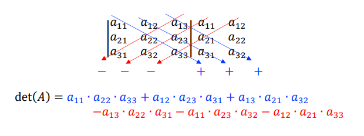
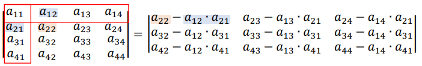

Determinantes
Toda matriz quadrada A está associada a um número real chamado determinante, que pode ser presentado por det(A) ou |A|. É possível obter esse número fazendo cálculos com os elementos da matriz.
Determinante de matriz 1x1
O determinante de uma matriz quadrada de ordem 1 é o único elemento da matriz.
Determinante de matriz 2x2
Para calcular o determinante de uma matriz 2x2, basta fazer o produto dos elementos da diagonal principal menos o produto dos elementos da diagonal secundária.
| 7 | 3 |
| -2 | 5 |
(7*5) - (3*-2) = 35 - (-6) = 41
Então, o determinante dessa matriz é igual a 41.
Determinante de matriz 3x3
Para calcular o determinante de uma matriz 3x3, devemos usar a Regra de Sarrus. Repetir a primeira e segunda coluna no lado direito da matriz, multiplicar os elementos de cada diagonal e somar os produtos. Caso a diagonal seja paralela a diagonal principal, manter o sinal, caso seja paralela a diagonal secundária, trocar o sinal.
 Fonte: Arquivo da professoraExemplo de cálculo de determinante de matriz de ordem 3:
| 0 | 4 | 5 | 0 | 4 |
| 2 | 7 | 4 | 2 | 7 |
| 1 | 2 | 8 | 1 | 2 |
(0 * 7 * 8) + (4 * 4 * 1) + (5 * 2 * 2) - (5 * 7 * 1) - (0 * 4 * 2) - (4 * 2 * 8) =
0 + 16 + 20 - 35 - 0 - 64 = -63
Então, temos que o determinante dessa matriz é igual a -63.
Propriedades de determinantes
Agora, veremos algumas Propriedades dos determinantes:
Fila de zeros: Quando se tem uma fila (linha ou coluna) zerada, o determinante da matriz vai ser igual a 0.
Filas paralelas iguais: Quando se tem duas filas paralelas (linhas ou colunas) iguais, o determinante da matriz vai ser igual a 0.
| 1 | 6 | 7 |
| 1 | 6 | 7 |
| 3 | 1 | 9 |
Filas paralelas proporcionais: Quando se tem duas filas paralelas proporcionais em uma matriz, seu determinante vai ser igual a 0. Essa é um pouco mais difícil de perceber, mas como podemos ver abaixo, a coluna 1 é a coluna 2 multiplicada por 2, isso que significa que o seu determinante vai ser igual 0.
| 1 | 2 | 7 |
| 5 | 10 | 7 |
| 4 | 8 | 9 |
Matriz transposta: O determinante de uma matriz M e sua transposta MT são iguais.
Multiplicação de uma fila por uma constante: Se multiplicarmos qualquer fila de uma matriz M por uma constante k, teremos uma nova matriz M', e o determinante dessa nova matriz M' é igual o produto da matriz M pela constante k.
det(M') = k * det(M)
Algo que é consequência dessa propriedade é que, se multiplicarmos todos os valores de uma matriz de ordem n por k, o determinante da nova matriz será multiplicado por kn.
Troca de filas pararelas: Quando se troca duas filas paralelas de uma matriz, o seu determinante troca de sinal.
Teorema de Binet: Sendo A e B duas matrizes quadradas de ordem igual e AB o produto das duas matrizes, o determinante da matriz AB será igual ao produto dos determinantes A e B.
Matriz triangular: O determinante de qualquer matriz triangular é igual ao produtos dos elementos da diagonal principal.
Teorema de Jacob: Se em uma matriz M, multiplicarmos uma fila por um número k e somarmos os resultados aos elementos correspondentes em outra fila paralela, teremos uma nova matriz M', que o determinante é igual ao determinante da matriz M.
Determinante de matriz 4x4 ou acima
Para encontrar o determinante de uma matriz 4x4 ou acima, devemos usar a Regra de Chió, que transforma a matriz de ordem n em uma matriz de ordem (n - 1) com o mesmo determinante.
Para aplicar a Regra, devemos nos certificar de que a11 = 1, ou seja, o primeiro elemento da matriz tem que ser igual a 1.
Suprimimos a primeira linha e primeira coluna da matriz, e em cada elemento da nova matriz, subtraímos o produto dos elementos das suas extremidades (linha e coluna que foi suprimida). Isso gerará uma nova matriz de ordem (n - 1) que o determinante será igual a M.
 Fonte: Arquivo da professora.Exemplo abaixo:
| 1 | 5 | 7 | 9 |
| -1 | 8 | 1 | 4 |
| 4 | 9 | 1 | 3 |
| 7 | 5 | -1 | 6 |
| 8 - (5 * -1) | 1 - (7 * -1) | 4 - (9 * -1) |
| 9 - (5 * 4) | 1 - (7 * 4) | 3 - (9 * 4) |
| 5 - (5 * 7) | -1 - (7 * 7) | 6 - (9 * 7) |
| 13 | 8 | 13 |
| -11 | -27 | -33 |
| -30 | -50 | -57 |
Agora, podemos calcular o determinante da matriz:
(13 * -27 * -57) + (8 * -33 * -30) + (13 * -11 * -50) - (13 * -27 * -30) - (-33 * -50 * 13) - (-57 * 8 * -11) = 20007 + 7920 + 7150 - 10530 - 21450 - 5016 = -1919
Então, o determinante daquela matriz de ordem 4 é igual a -1919.
Equações Matriciais
Algo que também podemos fazer é resolver equações de matrizes, por exemplo, temos que a matriz abaixo tem determinante 8 e precisamos descobrir o valor do X:
| 7 | x |
| 1 | 4 |
(7 * 4) - (1 * x) = 8
28 - x = 8
28 - 8 = x
x = 20
Então, temos que o valor do X na matriz é igual a 20.